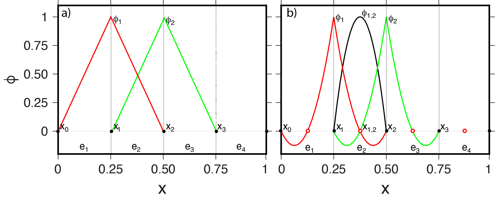

Poisson Example 1D#
Description#
As an introductory and simplified example we will solve the Poisson equation on a 1D domain of unit length, \(\Omega = [0,1]\), by seeking the approximate solution of
where we choose for this example \(h=\frac{1}{4}\pi^2 \sin\left(\frac{\pi x}{2} \right)\).
At the boundaries, \(x\)=0 and \(x\)=1, we apply as boundary conditions \begin{align} T &= 0 && \text{at } x=0 \ \frac{dT}{dx} &= 0 && \text{at } x=1 \end{align} The first boundary condition is an example of an essential or Dirichlet boundary condition where we specify the value of the solution. The second boundary condition is an example of a natural or Neumann boundary condition that can be interpreted to mean that the solution is symmetrical around \(x\)=1.
The analytical solution to the Poisson equation in 1D with the given boundary conditions and forcing function is simply
but we will still solve this numerically as a verification test of our implementation.
Finite element methods are formulated by writing out the weak form of the equation. In the case of 1D Poisson, we multiply the equation by an arbitrary “test” function, \(T_t\), and integrate over the domain:
To lower the continuity requirements on the discrete form of \(T\) we can integrate the first term by parts giving us the weak form of the equation
To discretize the equation, the FEM approximates \(T\) by \(\tilde{T}\), the solution’s representation in a function space on the mesh where
Here, \(T_j\) are coefficients that as indicated can be time-dependent if the problem is time-dependent (not the case in this example) but do not depend on space. The shape functions \(\phi_j\) are a function of space but generally independent of time. The index \(j\) indicates the number of the shape function on the mesh and is associated with the number of the nodal point or element number it is associated with. In this tutorial, we will principally discuss so-called Lagrange shape functions which define \(\phi_j\) as a polynomial over an element with a value of 1 at a single nodal point and a value of 0 at all other points associated with the degrees of freedom such that \(\sum_j\phi_j=1\). The shape functions can be of arbitrary order and can have various conditions on their continuity across or in between elements. We will focus principally on linear Lagrange shape functions (denoted by P1) and quadratic Lagrange shape functions (denoted by P2) that are continuous between mesh elements. 
Our choice of Lagrange shape functions means that \(T_j\) are the actual values of the solution. With other forms of the shape function (see, e.g., DefElement) \(T_j\) are instead interpolation weights that are used to construct the solution values. The split of temporal and spatial dependence above is typical in geodynamic applications but not required.
The test functions \(T_t\) can be independent of the functions that span the function space of the trial function, but in the widely used Galerkin approach the test functions are restricted to be in the same function space such that
Since the method is valid for all \(\tilde{T}_t\) we can dispense with the test function values at the DOFs, \(T_{ti}\) and, through substitution of \(T = \tilde{T}\) and \(T_t = \tilde{T}_t\) write the discrete weak form as
The second term can be dropped because we require \(\frac{d\tilde{T}}{dx} = 0\) at \(x=1\) and the solution at \(x=0\) (\(i=0\)) is known (\(T_0=0\))
Given a domain with \(n\) DOFs such that \(i,j=1, \ldots, n\), the discrete weak form can be assembled into a matrix-vector system of the form
where \(\bf{S}\) is a \(n \times n\) matrix, \(\bf{f}\) is the right-hand side vector of length \(n\) and \(\bf{u}\) is the solution vector of values at the DOFs
where \({\bf T}\) has components \(T_j\) that define the continuous approximate solution
and \(T_0 = 0\).
Implementation#
Traditionally, finite element methods have been implemented using Fortran or C/C++ based codes that, at the core, build the matrix-vector system by numerical integration, after which this system is solved by linear algebraic solvers. Most FEM codes provide options for time-dependence and the ability to solve nonlinear and nonlinearly coupled systems of PDEs. Examples of such codes that have been used in geodynamical applications including subduction zone modeling are ConMan, Sopale, Underworld, CitcomS, MILAMIN, ASPECT, Sepran, Fluidity, and Rhea. A number of these are distributed as open-source software and many among those are currently maintained through the Computational Infrastructure for Geodynamics. These implementations can be shown to be accurate using intercomparisons and benchmarks and make use of advances in parallel computing and efficient linear algebra solver techniques. Yet, modifications to the existing code requires deep insight into the structure of the Fortran/C/C++ code which is not trivial for experienced, let alone beginning, users.
In recent years an alternative approach for FEM has become available which elevates the user interface to simply specifying the FEM problem and solution method with the high-level approach. Python code is used to automatically build a finite element model that can be executed in a variety of environments ranging from Jupyter notebooks and desktop computers to massively parallel high performance computers. Two prominent examples of this approach are Firedrake and FEniCS. Examples of the use of these two approaches in geodynamical applications are in Davies et al., 2022 and Vynnytska et al., 2013.
This and following examples were presented by Wilson & van Keken, 2023 using FEniCS v2019.1.0 and TerraFERMA, a GUI-based model building framework that also uses FEniCS v2019.1.0. These simulations are publicly available in a zenodo archive and can be run using a docker image.
Here we will focus on reproducing the results of Wilson & van Keken, 2023 using the latest version of FEniCS, FEniCSx. FEniCS is a suite of open-source numerical libraries for the description of finite element problems. Most importantly it provides a high-level, human-readable language for the description of equations in python Unified Form Language (UFL) and the FEniCS Form Compiler (FFC) to write fast code to assemble the resulting discrete matrix-vector system.
Preamble#
We start by loading all the modules we will require.
from mpi4py import MPI
import dolfinx as df
import dolfinx.fem.petsc
import numpy as np
import ufl
import matplotlib.pyplot as pl
import pathlib
import sys, os
sys.path.append(os.path.join(os.path.pardir, 'python'))
import utils
Solution#
We then declare a python function solve_poisson_1d that contains a complete description of the discrete Poisson equation problem.
This function follows much the same flow as described above:
we describe the domain \(\Omega\) and discretize it into
neelements or cells to make ameshwe declare the function space,
V, to use Lagrange polynomials of degreepusing this function space we declare trial,
T_a, and test,T_t, functionswe define the Dirichlet boundary condition,
bcat \(x=0\), setting the desired value there to be 0we define the right hand side forcing function \(h\),
hwe describe the discrete weak forms,
Sandf, that will be used to assemble the matrix \(\mathbf{S}\) and vector \(\mathbf{f}\)we solve the matrix problem using a linear algebra back-end and return the solution
For a more detailed description of solving the Poisson equation using FEniCSx, see the FEniCSx tutorial.
def solve_poisson_1d(ne, p=1):
"""
A python function to solve a one-dimensional Poisson problem
on a unit interval domain.
Parameters:
* ne - number of elements
* p - polynomial order of the solution function space
"""
# Describe the domain (a one-dimensional unit interval)
# and also the tessellation of that domain into ne
# equally spaced elements
mesh = df.mesh.create_unit_interval(MPI.COMM_WORLD, ne)
# Define the solution function space using Lagrange polynomials
# of order p
V = df.fem.functionspace(mesh, ("Lagrange", p))
# Define the trial and test functions on the same function space (V)
T_a = ufl.TrialFunction(V)
T_t = ufl.TestFunction(V)
# Define the location of the boundary, x=0
def boundary(x):
return np.isclose(x[0], 0)
# Specify the value and define a boundary condition (bc)
boundary_dofs = df.fem.locate_dofs_geometrical(V, boundary)
gD = df.fem.Constant(mesh, df.default_scalar_type(0.0))
bc = df.fem.dirichletbc(gD, boundary_dofs, V)
# Define the right hand side function, h
x = ufl.SpatialCoordinate(mesh)
h = (ufl.pi**2)*ufl.sin(ufl.pi*x[0]/2)/4
# Define the integral to be assembled into the stiffness matrix
S = ufl.inner(ufl.grad(T_t), ufl.grad(T_a))*ufl.dx
# Define the integral to be assembled into the forcing vector
f = T_t*h*ufl.dx
# Compute the solution (given the boundary condition, bc)
problem = df.fem.petsc.LinearProblem(S, f, bcs=[bc], \
petsc_options={"ksp_type": "preonly", \
"pc_type": "lu"})
T_i = problem.solve()
# Return the solution
return T_i
We can then use solve_poisson_1d to solve on, for example, 4 elements with (the default) P1 elements.
ne = 4
T_P1 = solve_poisson_1d(ne)
Comparing the numerical, \(\tilde{T}\), and analytical, \(T\), solutions we can see that even at this small number of elements we do a good job at reproducing the correct answer.
x = np.linspace(0, 1, 201)
xyz = np.stack((x, np.zeros_like(x), np.zeros_like(x)), axis=1)
T_P1_x = T_P1.eval(xyz, utils.get_first_cells(xyz, T_P1.function_space.mesh))[:,0]
pl.plot(x, T_P1_x, label='$\\tilde{T}$ (P1)')
pl.plot(x[::50], T_P1_x[::50], 'o')
pl.plot(x, np.sin(np.pi*x/2), '--g', label='$T$')
pl.gca().legend()
pl.gca().set_xlabel('$x$')
pl.gca().set_ylabel('$T$')
_ = pl.gca().set_title('Numerical (P1) and exact solutions')
We can also try with a higher order element and see how it improves the solution.
T_P2 = solve_poisson_1d(4, p=2)
The higher polynomial degree qualitatively appears to have a dramatic improvement in the solution accuracy.
x = np.linspace(0, 1, 201)
xyz = np.stack((x, np.zeros_like(x), np.zeros_like(x)), axis=1)
T_P2_x = T_P2.eval(xyz, utils.get_first_cells(xyz, T_P2.function_space.mesh))[:,0]
pl.plot(x, T_P2_x, label='$\\tilde{T}$ (P2)')
pl.plot(x[::25], T_P2_x[::25], 'o')
pl.plot(x, np.sin(np.pi*x/2), '--g', label='$T$')
pl.gca().legend()
pl.gca().set_xlabel('$x$')
pl.gca().set_ylabel('$T$')
_ = pl.gca().set_title('Numerical (P2) and exact solutions')
Testing#
We can quantify the error in cases where the analytical solution is known by taking the L2 norm of the difference between the numerical and exact solutions.
def evaluate_error(T_i):
"""
A python function to evaluate the l2 norm of the error in
the one dimensional Poisson problem given a known analytical
solution.
"""
# Define the exact solution
x = ufl.SpatialCoordinate(T_i.function_space.mesh)
Te = ufl.sin(ufl.pi*x[0]/2)
# Define the error between the exact solution and the given
# approximate solution
l2err = df.fem.assemble_scalar(df.fem.form((T_i - Te)*(T_i - Te)*ufl.dx))**0.5
# Return the l2 norm of the error
return l2err
Repeating the numerical experiments with increasing ne allows us to test the convergence of our approximate finite element solution to the known analytical solution. A key feature of any discretization technique is that with an increasing number of degrees of freedom (DOFs) these solutions should converge, i.e. the error in our approximation should decrease. As an error metric we will use the \(L^2\) norm of the difference between the
approximate, \(\tilde{T}\), and analytical, \(T\), solutions
The rate at which this decreases is known as the order of convergence. Numerical analysis predicts a certain order depending on the type of the polynomials used as finite element shape functions and other constraints related to the well-posedness of the problem. For piecewise linear shape functions we expect second-order convergence, that is that the error decreases as \(h^{-2}\) where \(h\) is the nodal point spacing. With piecewise quadratic elements we expect to see third-order convergence.
# Open a figure for plotting
fig = pl.figure()
# Make an output folder
output_folder = pathlib.Path("output")
output_folder.mkdir(exist_ok=True, parents=True)
# List of polynomial orders to try
ps = [1, 2]
# List of resolutions to try
nelements = [10, 20, 40, 80, 160, 320]
# Keep track of whether we get the expected order of convergence
test_passes = True
# Loop over the polynomial orders
for p in ps:
# Accumulate the errors
errors_l2_a = []
# Loop over the resolutions
for ne in nelements:
# Solve the 1D Poisson problem
T_i = solve_poisson_1d(ne, p)
# Evaluate the error in the approximate solution
l2error = evaluate_error(T_i)
# Print to screen and save
print('ne = ', ne, ', l2error = ', l2error)
errors_l2_a.append(l2error)
# Work out the order of convergence at this p
hs = 1./np.array(nelements)/p
# Write the errors to disk
with open(output_folder / '1d_poisson_convergence_p{}.csv'.format(p), 'w') as f:
np.savetxt(f, np.c_[nelements, hs, errors_l2_a], delimiter=',',
header='nelements, hs, l2errs')
# Fit a line to the convergence data
fit = np.polyfit(np.log(hs), np.log(errors_l2_a),1)
print("*********** order of accuracy p={}, order={:.2f}".format(p,fit[0]))
# log-log plot of the error
pl.loglog(hs,errors_l2_a,'o-',label='p={}, order={:.2f}'.format(p,fit[0]))
# Test if the order of convergence is as expected
test_passes = test_passes and fit[0] > p+0.9
# Tidy up the plot
pl.xlabel('h')
pl.ylabel('||e||_2')
pl.grid()
pl.title('Convergence')
pl.legend()
pl.savefig(output_folder / '1d_poisson_convergence.pdf')
print("*********** convergence figure in output/poisson_convergence.pdf")
# Check if we passed the test
assert(test_passes)
ne = 10 , l2error = 0.0015918430698274603
ne = 20 , l2error = 0.0003981215373662135
ne = 40 , l2error = 9.95404347873047e-05
ne = 80 , l2error = 2.488573694825128e-05
ne = 160 , l2error = 6.221473700843889e-06
ne = 320 , l2error = 1.555370621288354e-06
*********** order of accuracy p=1, order=2.00
ne = 10 , l2error = 1.5754217848735496e-05
ne = 20 , l2error = 1.9698108556933277e-06
ne = 40 , l2error = 2.4624303785777827e-07
ne = 80 , l2error = 3.0780902343243206e-08
ne = 160 , l2error = 3.84762965731367e-09
ne = 320 , l2error = 4.813312843575689e-10
*********** order of accuracy p=2, order=3.00
*********** convergence figure in output/poisson_convergence.pdf